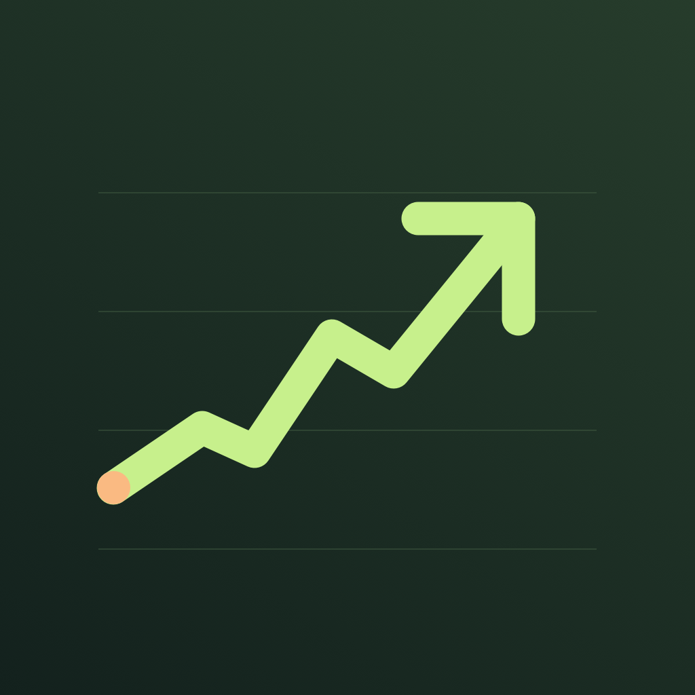
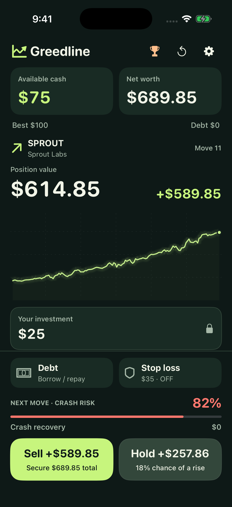

Your stake. Your call.
Start small or commit more. Every move pays the offered gain or crashes the position—even the first. A living ticker gives every trade its own rhythm.

GreedlineStock Market Game / Made for iPhone
You have $100 and one very tempting decision. Choose your stake. Take the profit—or stay in for one more move.
Find your enoughComing to iPhone · iOS 17 or later

Start small or commit more. Every move pays the offered gain or crashes the position—even the first. A living ticker gives every trade its own rhythm.
Sell to lock in your profit, or hold for a larger gain and a higher crash risk. A crash loses your investment; cash kept aside stays yours.
Activate Stop loss to recover 80% of your stake on one crash. Take on challenges for cash bonuses when you bank their targets.
A game of enough.
No countdown or fixed number of rounds. No real stocks or real-money purchases. Just your position and your next decision.
Request up to three $100 loans, then repay all debt to borrow again. Each move adds 2% interest; $400 debt ends the run. Restart with $100 whenever you choose.
Rallies, pullbacks, and dramatic crashes bring the ticker to life. Generated sound and optional haptics make each decision land.
Leave the app and come back to the same trade. Your bankroll, purchases, and personal best stay on your iPhone.
Turn sound or haptics off, or reduce the ticker effects. Sound respects Silent Mode.
Play offline with no account required. No ads, analytics, or app data collection.